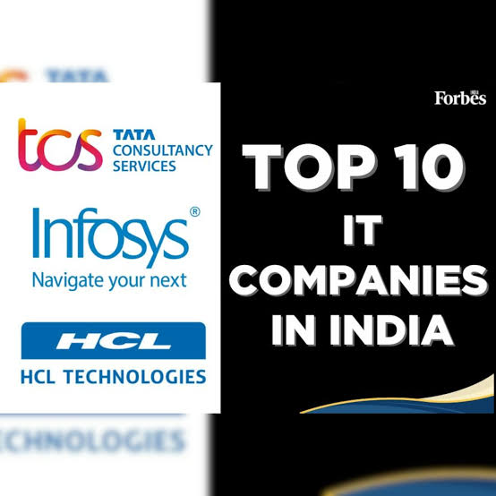
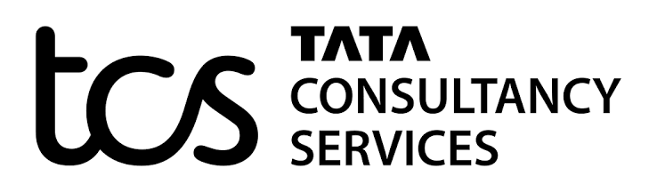

About TCS



Tata Consultancy Services (TCS) is a global IT services, consulting, and business solutions organization, headquartered in Mumbai, India, and part of the Tata Group. Founded in 1968, it operates across 55 countries and is one of the world's largest technology employers
Tata Consultancy Services Limited[5] (TCS) is an Indian multinational technology company specializing in information technology services and consulting. Headquartered in Mumbai, it is a part of the Tata Group and operates in 150 locations across 46 countries.[6] As of 2024, Tata Sons owned 71.74% of TCS, and close to 80% of Tata Sons' dividend income came from TCS.
Tata Consultancy Services Limited, originally known as Tata Computer Systems, was established in 1968 by Tata Sons Limited.[14] The company's initial contracts involved providing punched card services to its sister company TISCO (now Tata Steel), developing an Inter-Branch Reconciliation System for the Central Bank of India,[15] and offering bureau services to the Unit Trust of India.
In 1975, TCS implemented an electronic depository and trading system named SECOM for Swiss company SIS SegaInterSettle. It also developed System X for the Canadian Depository System and automated the Johannesburg Stock Exchange.[16] TCS also partnered with the Swiss firm TKS Teknosoft, which it later acquired
In 1980, TCS established India's first dedicated software research and development center, the Tata Research Development and Design Centre (TRDDC), located in Pune.[18] The following year, it created India's first client-dedicated offshore development centre, established for Tandem.
Anticipating the Y2K bug and the introduction of the unified European currency (Euro), Tata Consultancy Services developed a factory model for Y2K conversion. The company also created software tools to automate the conversion process and facilitate implementation by third-party developers and clients.[19] In late 1999, TCS introduced Decision Support System (DSS) solutions to the domestic market.[20] In 1999, the company also registered its first tagline, "Beyond the Obvious
In 2011, TCS entered the small and medium enterprises market with cloud-based solutions.[33] On the final trading day of 2011, it surpassed RIL to achieve the highest market capitalization of any India-based company.[34] In the 2011–12 fiscal year, TCS achieved annual revenues exceeding US$10 billion for the first time
In July 2025, TCS announced that it would downsize its global workforce by 2%, or about 12,000 employees, primarily from middle- and senior-level positions, citing a "skill mismatch".[52][53] By the end of the 2025–26 fiscal year, the company reported a consolidated revenue of ₹271,423 crore (US$28 billion).[54] The company reported a global headcount of 584,519 employees as of March 2026.